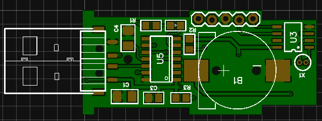

Unlike a PC the Raspberry Pi does not come with any sort real time clock. Usually this is not a problem as it is connected to the Internet and a simple poll of one of the many clock sources will set the internal clock as accurate as a shaved atom.
However in some circumstances such as when you are not connected to the internet and require accurate timekeeping even during power outages a real-time clock is of great value such as with Industrial control units.
Several solutions exist that plug a Real-Time Clock Chip (Usually a DS1307) into the IO Header and connect using I2C however if your IO header is in use it gets a bit messy, so here I present a simpler solution which is a USB Dongle that still uses the ubiquitous DS1307 and emulates a serial port from which you can read and set the clock using normal serial commands.
No driver necessary! Plug in the USB connect to the New USB serial port at 115200 baud and voila!
As you can see it is Human friendly and computer friendly date/time formats are available.
The design is based around the DS1307 and the el-cheapo PIC16F1455 which is around a dollar which I have thrown together and added an open source USB Stack in to the mix to get it all going. Gotta Love that little ol’ PIC chip!

Project is more or less complete, the PCB above is Rev 3 and is awaiting delivery, three revisions is a bit extreme, but cut-outs can be hard to do and for $2 to get the PCB made who’s going to bother prototyping anything now! I had a lot of messing around trying to fit it in a suitable USB Dongle Enclosure and USB-A Connector, the one I finally settled on is the USB-7201-G from Bud Industries which I got off digikey. I must say I am non too happy with the PCB footprints for USB-A Connectors, there must be over 100 but none look like the connectors will fit due to the two tabs on the connector case which I had to break off (yes extreme annoyance can be handy sometimes!).
I changed my original circuit from a tiny super-capacitor to a battery as I thought I could sneakily enter the hack-a-day coin cell prize, however after doing it and re-thinking the rules it is not really powered by a coin cell and has no power management so in the end I diddn’t bother entering..
In the next version ($2 a PCB remember!) I think I will go back to a super-capacitor again. difference is the coin-cell version will keep power for about 5 years where as the 480uF super-capacitor version will only do about 4 days which, lets face it, is more than adequate for brown-outs and extended power failures.
The version 1 prototype above uses a super-capacitor charged with a resistor/diode from the PICs VUSB3V3 pin 11, I actually think its a better design than the coin-cell one shown here as you will never need to change batteries (not that changing one every 5 years is that big a deal!) and its not such a tight fit in the case.
The circuit above is about the simplest project I have made for a while and the firmware all fitted together nicely due to a nice Open source PIC USB Library from a guy called Alan Ott at Signal 11 Software so hats off to him for doing the real hard work. I have said it before the USB stack is everything I hate so anyone making it easy to use has my thanks. Only real issue I have is the accuracy which seems to loose a minute a day, this is probably due to the crappy-cheap crystal which is supposed to be tuned for 12.5pf or the knock-off ds1307 chip, anyway going to try a few more that may meet the maxim data sheet better.
EDA Project is here
MPLAB XC8 Project is here
PDF Programming Instructions (for newbies) here
Small disclaimer. I finalized the code and got it all working and tested it on my windows 10 PC as I could not actually locate my Raspberry Pi anywhere (it was around a few weeks ago when I planned the project!), it worked with Linux too so I am assuming all is good. I am having a mega-clean out of the office over XMAS hopefully I will find it somewhere and verify it works OK
Edit: It works fine.